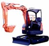

１雀頭４メンツならぬ、１雀頭３メンツ。俗に言うアメリカ役。といってもかなりローカルらしい。メンツは１２３４という長順子でも、長暗刻（＝槓仔（カンコ））でも良い。
バックホー             
（ノンバックとも）
バックワン 
（ワンバック）
バックスリー  
（スリーバック）
ぜ〜んぶ長順子なら単なるバックホー。槓仔が１つあるとバックワン、以下、バックツー，バックスリー。とうぜんワンツースリーの中では作りにくいバックスリーが一番ポイントが高い。
しかしバックホー＝ノンバックはチャンタやタンヤオ、サンシキなどと複合する。そこで組み合わせによって合計ポイントが高くなることもある。
バックホー   
タンヤオサンシキ
バックホー       
ジュンチャンサンシキ
もちろん長暗刻型でも、組み合わせによって合計ポイントが高くなる。
三同刻（バックスリー） 
三連刻（バックスリー）
混一バックホー
混一バックワン 
清一バックツー
チンロートー
ツーイーソー   
スーシーホー 
ダイサンゲン
リューイーソー
しかし明槓アリの普通の麻雀でも三槓子はなかなかできない。ましてや門前での槓仔３組など、普通では出来るわけがない。そんなのがアガリ形となっているのは、手牌の不要牌をまとめて交換する。それを何度も繰り返して完成形にもってゆくという変則アメリカ麻雀なればこそ。まぁ、麻雀というよりポーカーの感覚。
４枚で１メンツなので、Back Four(バックフォー)と表記されていることもあるが、正しくはBack Hoe。直訳すれば「後ろの鍬（くわ）」
ショベルカーという重機がある。そのショベルカーの小さいのがBack Hoe(バックホー）。ユンボとかミニショベルとも呼ばれ、道路の溝掘り工事などでよく見かける。

このショベル部分がHoe（鍬）。そこでバックホーという役名は同一牌をかき集めるという主旨からきたらしい。となればバックスリータイプが本来の主旨か。
それはいいとしても、本物（機械）のバックホー、ショベルは前についている。なんでBack Hoeなんだろう。昔は大型の重機の後ろにオマケでついていたのかな？ 小松製作所にでも聞いてみるか。(^-^；
|